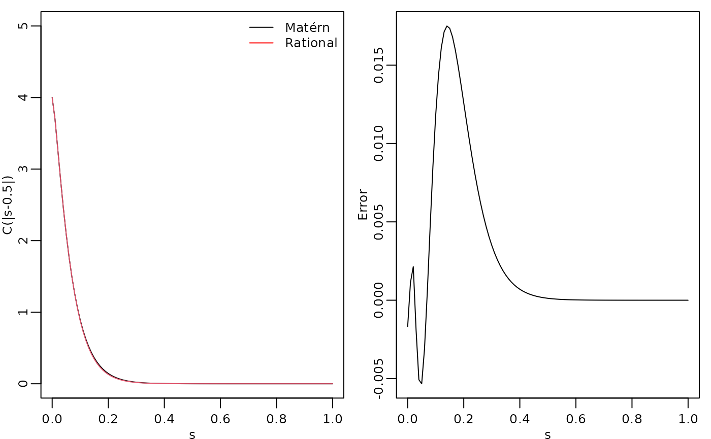
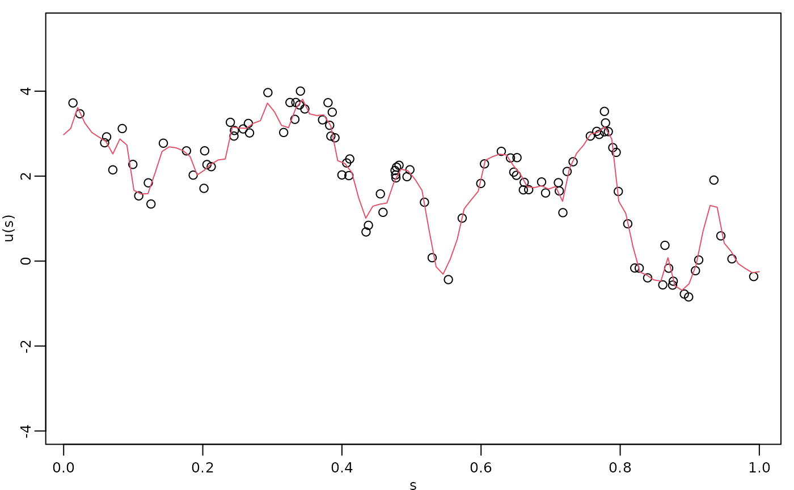

Rational approximations without finite element approximations
David Bolin and Alexandre B. Simas
Created: 2024-07-20. Last modified: 2024-10-17.
Source:vignettes/rspde_nofem.Rmd
rspde_nofem.RmdIntroduction
For models in one dimension, we can perform rational approximations without finite elements. This enables us to provide computationally efficient approximations of Gaussian processes with Mat'ern covariance functions, without having to define finite element meshes, and without having boundary effects due to the boundary conditions that are usually required. In this vignette we will introduce these methods.
We begin by loading the rSPDE package:
Assume that we want to define a model on the interval , which we want to evaluate at some locations
s <- seq(from = 0, to = 1, length.out = 101)We can now use matern.rational() to construct a rational
SPDE approximation of order
for a Gaussian random field with a Matérn covariance function on the
interval.
kappa <- 20
sigma <- 2
nu <- 0.8
r <- sqrt(8*nu)/kappa #range parameter
op_cov <- matern.rational(loc = s, nu = nu, range = r, sigma = sigma, m = 2, parameterization = "matern")The object op_cov contains the information needed for
evaluating the approximation. Note, however, that the approximation is
invariant to the locations loc, and they are only supplied
to indicate where we want to evaluate it.
To evaluate the accuracy of the approximation, let us compute the
covariance function between the process at
and all other locations in s and compare with the true
Matérn covariance function. The covariances can be calculated by using
the covariance() method.
c_cov.approx <- op_cov$covariance(ind = 1)
c.true <- matern.covariance(abs(s[1] - s), kappa, nu, sigma)The covariance function and the error compared with the Matérn covariance are shown in the following figure.
opar <- par(
mfrow = c(1, 2), mgp = c(1.3, 0.5, 0),
mar = c(2, 2, 0.5, 0.5) + 0.1
)
plot(s, c.true,
type = "l", ylab = "C(|s-0.5|)", xlab = "s", ylim = c(0, 5),
cex.main = 0.8, cex.axis = 0.8, cex.lab = 0.8
)
lines(s, c_cov.approx, col = 2)
legend("topright",
bty = "n",
legend = c("Matérn", "Rational"),
col = c("black", "red"),
lty = rep(1, 2), ncol = 1,
cex = 0.8
)
plot(s, c.true - c_cov.approx,
type = "l", ylab = "Error", xlab = "s",
cex.main = 0.8, cex.axis = 0.8, cex.lab = 0.8
)
par(opar)
To improve the approximation we can increase the order of the approximation, by increasing . Let us, for example, compute the approximation with .
errors <- rep(0, 4)
for (i in 1:4) {
op_cov_i <- matern.rational(loc = s, range = r, sigma = sigma, nu = nu,
m = i, parameterization = "matern")
errors[i] <- norm(c.true - op_cov_i$covariance(ind = 1))
}
print(errors)## [1] 1.36208052 0.29200800 0.07907210 0.02597968We see that the error decreases very fast when we increase from to .
Simulation
We can simulate from the constructed model using the
simulate() method. To such an end we simply apply the
simulate() method to the object returned by the
matern.operators() function:
If we want replicates, we simply set the argument nsim
to the desired number of replicates. For instance, to generate two
replicates of the model, we simply do:
u.rep <- simulate(op_cov, nsim = 2)Inference
There is built-in support for computing log-likelihood functions and
performing kriging prediction in the rSPDE package. To
illustrate this, we use the simulation to create some noisy observations
of the process. For this, we first construct the observation matrix
linking the FEM basis functions to the locations where we want to
simulate. We first randomly generate some observation locations and then
construct the matrix.
We now generate the observations as , where is Gaussian measurement noise, is a covariate giving the observation location. We will assume that the latent process has a Matérn covariance with and :
n.rep <- 10
kappa <- 20
sigma <- 1.3
nu <- 0.8
r <- sqrt(8*nu)/kappa
op_cov <- matern.rational(loc = obs.loc, nu = nu, range = r, sigma = sigma, m = 2,
parameterization = "matern")
u <- matrix(simulate(op_cov, n = n.rep), ncol = n.rep)
sigma.e <- 0.3
x1 <- obs.loc
Y <- matrix(rep(2 - x1, n.rep), ncol = n.rep) + u + sigma.e * matrix(rnorm(n.obs*n.rep), ncol = n.rep)
repl <- rep(1:n.rep, each = n.obs)
df_data <- data.frame(y = as.vector(Y), loc = rep(obs.loc, n.rep),
x1 = rep(x1, n.rep), repl = repl)Let us create a new object to fit the model:
op_cov_est <- matern.rational(loc = obs.loc, m = 2)Let us now fit the model. To this end we will use the
rspde_lme() function:
fit <- rspde_lme(y~x1, model = op_cov_est,
repl = repl, data = df_data, loc = "loc",
parallel = TRUE)Here is the summary:
summary(fit)##
## Latent model - Whittle-Matern
##
## Call:
## rspde_lme(formula = y ~ x1, loc = "loc", data = df_data, model = op_cov_est,
## repl = repl, parallel = TRUE)
##
## Fixed effects:
## Estimate Std.error z-value Pr(>|z|)
## (Intercept) 2.0160 0.2958 6.816 9.35e-12 ***
## x1 -1.1963 0.4971 -2.407 0.0161 *
##
## Random effects:
## Estimate Std.error z-value
## alpha 1.41388 0.10875 13.001
## tau 0.02484 0.01257 1.977
## kappa 21.51542 3.81397 5.641
##
## Random effects (Matern parameterization):
## Estimate Std.error z-value
## nu 0.91388 0.10875 8.403
## sigma 1.41365 0.08747 16.162
## range 0.12567 0.01120 11.218
##
## Measurement error:
## Estimate Std.error z-value
## std. dev 0.29192 0.01447 20.18
## ---
## Signif. codes: 0 '***' 0.001 '**' 0.01 '*' 0.05 '.' 0.1 ' ' 1
##
## Log-Likelihood: -876.9439
## Number of function calls by 'optim' = 56
## Optimization method used in 'optim' = L-BFGS-B
##
## Time used to: fit the model = 2.68585 mins
## set up the parallelization = 2.46274 secsLet us compare with the true values and compare the time:
print(data.frame(
sigma = c(sigma, fit$matern_coeff$random_effects[2]),
range = c(r, fit$matern_coeff$random_effects[3]),
nu = c(nu, fit$matern_coeff$random_effects[1]),
row.names = c("Truth", "Estimates")
))## sigma range nu
## Truth 1.300000 0.1264911 0.8000000
## Estimates 1.413649 0.1256721 0.9138763
# Total time (time to fit plus time to set up the parallelization)
total_time <- fit$fitting_time + fit$time_par
print(total_time)## Time difference of 163.6141 secsKriging
Finally, we compute the kriging prediction of the process
at the locations in s based on these observations.
Let us create the data.frame with locations in which we
want to obtain the predictions. Observe that we also must provide the
values of the covariates.
s <- seq(from = 0, to = 1, length.out = 100)
df_pred <- data.frame(loc = s, x1 = s)We can now perform kriging with the predict() method.
For example, to predict at the locations for the first replicate:
u.krig <- predict(fit, newdata = df_pred, loc = "loc", which_repl = 1)The simulated process, the observed data, and the kriging prediction are shown in the following figure.
opar <- par(mgp = c(1.3, 0.5, 0), mar = c(2, 2, 0.5, 0.5) + 0.1)
plot(obs.loc, Y[,1],
ylab = "u(s)", xlab = "s",
ylim = c(min(c(min(u), min(Y))), max(c(max(u), max(Y)))),
cex.main = 0.8, cex.axis = 0.8, cex.lab = 0.8
)
lines(s, u.krig$mean, col = 2)
par(opar)
We can also use the augment() function and pipe the
results into a plot:
library(ggplot2)
library(dplyr)
augment(fit, newdata = df_pred, loc = "loc", which_repl = 1) %>% ggplot() +
aes(x = loc, y = .fitted) +
geom_line(col="red") +
geom_point(data = df_data[df_data$repl==1,], aes(x = loc, y=y))